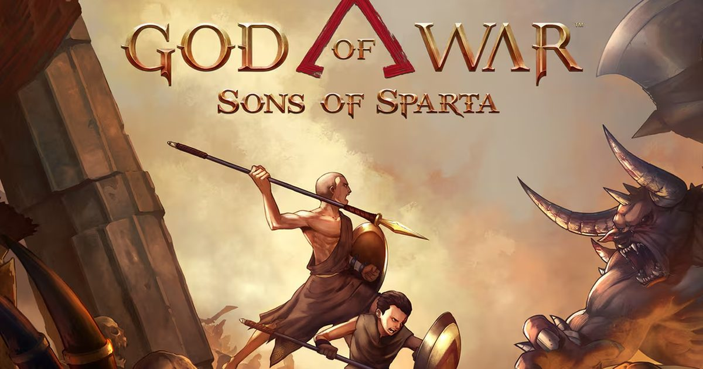

2026-11-14 · 单机深读

11 月 13 日，PlayStation Blog 挂出一则短公告：横版前传《战神：斯巴达之子》将于 11 月 16 日当地时间午夜登陆 PS4，同时给 PS4 和 PS5 双平台免费追加两个新模式—— 面向速通玩家的赫尔墨斯模式，和「你与敌人皆一击必杀」的厄瑞玻斯模式。 大多数报道会停在「PS4 版来了 + 两个新模式」的新闻通稿层面。真正值得拆的是另外两件事： 这两个模式的设计细节，暴露了 Santa Monica 对这款「实验品」的真实定位； 以及一个更反直觉的事实——这部 Metacritic 64 分、系列历史最低分的作品， 2 月发售时靠 29.99 美元的定价在销量榜上压过了 GTA V。这不是一次普通的移植， 这是索尼第一次把第一方 IP 当低成本长线产品来运营的公开信号。
先交代背景。《斯巴达之子》是 2 月 12 日在 PS5 上无预告 shadow drop 的实验性作品： Mega Cat Studios 与 Santa Monica Studio 联合开发、SIE 发行，2.5D 类银河恶魔城玩法， 剧情回到奎托斯与兄弟戴莫斯在斯巴达 Agoge 受训的少年时代，两人因一名同袍学员失踪而踏上寻找之旅。 T.C. 卡森回归为成年奎托斯担任旁白，年轻奎托斯则由 2010 年《斯巴达之魂》的原配 Antony Del Rio 继续出演， Bear McCreary 负责配乐，编剧团队来自《战神》(2018) 与《诸神黄昏》——正典地位是官方明说的。
然后就是这次公告里最不寻常的部分：PS5 游戏反向移植到 PS4。 行业惯例里移植是「旧平台→新平台」的单向流动，反向操作极其罕见。 但逻辑其实顺：像素风格的 2D 游戏对硬件几乎没要求；PS4 的存量装机仍然庞大； 而「战神」这个 IP 的家底本来就在 PS4 上——《战神》(2018) 是 PS4 独占，《诸神黄昏》也是双平台发售。 把一部讲奎托斯希腊时代往事的 2D 前传送回 PS4，更像一次认亲，而不是妥协。
赫尔墨斯模式是一套完整的速通工具包：基于分段的计时器（split timer）+ 常驻排行榜。 注意它的解锁设计——正常路径是通关一次后开启，但官方留了一个后门：在开始菜单输入 上、上、下、下、左、右、左、右、L1、R1、触摸板。 这是 Konami Code 的变体致敬，只是把结尾的 B、A 换成了 L1、R1 和触摸板—— 一款复古像素游戏用老派秘籍解锁速通功能，形式与内容是自洽的。
这里有一个容易被略过的信号：常驻排行榜意味着官方服务器在为这个模式持续记分。 速通社区通常靠 Speedrun.com 这类第三方站点自组织，官方自己把分段计时和排行榜做进 UI， 等于承认「速通不是周边生态，是留存手段」。对一个 11 小时流程的一周目游戏来说， 速通和挑战模式就是它全部的可重玩性来源—— Santa Monica 对此心知肚明。
厄瑞玻斯模式则是另一个极端：奎托斯与敌人双向一击必杀。 这不是常见的「玩家一击必杀」自虐模式——敌人同样脆，意味着它考察的不是耐心， 而是先手、走位与敌人知识：你可以一刀秒掉对方，对方也可以。公告没有公布它的解锁条件， 只有一个硬约束：模式在开始新游戏、选择存档槽时选定，选定后该存档的模式无法更改。 也就是说，你已经打完的一周目存档不受影响，两个模式都要求开新档—— 这既是保护，也是逼你重新进入一次 Laconia。
把口碑数据摊开看：《斯巴达之子》Metacritic 64 分（82 篇媒体评测）， 系列历史最低；OpenCritic 仅 29% 的媒体推荐；IGN 给了 6/10， 评价是「一款相当平庸的类银河恶魔城，没能达到该类型巨头立下的高标准」； Edge 只给 50 分；Shacknews 甚至给了 40 分，批评它「带着假复古的 corporate 味」。 系列缔造者 David Jaffe 更直接：一款 2.5D 战神「是我一直想要的那种游戏」， 但他不喜欢这段体验，也不推荐——「这不是战神」。
但商业数据讲的是另一个故事。按 Circana 口径（按收入统计），它是 2026 年 2 月 全平台畅销榜第 14 名、PlayStation 平台第 6 名，把 GTA V 压在了身后。 注意 14 名的含金量：它的定价是 29.99 美元（豪华版 39.99），不到 69.99 美元大作的一半—— 收入口径下它实际卖出的份数远超同榜的《对马岛之魂：Yōtei 之鬼》（15 名）、《极限竞速：地平线 5》（16 名）、 《漫威蜘蛛侠 2》（18 名）这些全价游戏。玩家侧同样分裂：Metacritic 用户评分 6.0、 好评率不到一半，PS Store 页面却有 4.1/5 星。
这组数据的解读只有一种是自洽的：品牌忠诚度撑起了销量，玩法平庸压住了媒体分。 而 Sony 的应对方式很能说明问题——不是砍掉，而是加码：免费追加两个重玩性模式、 反向移植扩大用户盘、配合延期中的正传《战神：Laufey》做长尾铺垫。 对一个按 3A 标准衡量成本几乎可以忽略的项目来说，这已经是一门很好的生意。
我们的观察：把这次更新和 2 月的发售方式连起来看，节奏是精心排过的： 2 月 shadow drop（零营销成本试水）→ 口碑一般但销量超预期 → 免费追加模式（重玩性补课）→ 11 月反向移植 PS4（扩大基数）→ 给正传 Laufey 留出话题空档。 这套「小步快跑」的节奏，与传统 3A「三年开发、一次豪赌」的发行模式完全不同。 《斯巴达之子》可能只是个例，但它演示了一条第一方 IP 低成本试错的新路径。
我们的观点：Jaffe 说「这不是战神」，从玩法气质上讲我们部分同意—— 奎托斯的暴力美学被 2D 化之后确实变味了。但「是不是战神」从来不该只由战斗系统决定： T.C. 卡森的旁白、希腊时代的正典叙事、与戴莫斯的兄弟线，这些是这个系列在挪威篇之前 玩家等了十几年的东西。媒体打 64 分评的是游戏性，玩家给 4.1 星买的是叙事。 两个分数都对，只是它们在回答不同的问题。
我们的案例对比：同样是第一方 IP 的「小型化实验」，对比任天堂的 《碧姬公主》系列或索尼自家的《宇宙机器人》：后者靠玩法创新赢得高分， 前者（《斯巴达之子》）靠 IP 情怀卖出销量。两条路径的差别在于天花板—— 玩法创新能创造新受众，情怀运营只能收割存量受众。这就是为什么《斯巴达之子》 的用户好评率随时间递减：情怀是一次性消费，两个新模式本质上是在给存量用户 找一个「再开一次新档」的理由。
我们的实验：我们做了一个粗糙的推算：假设 PS4 版定价延续 29.99 美元， 按收入口径它要进入 11 月全平台前 20，需要卖出相当于一款全价大作两倍的份数。 2 月它已经证明过一次这种「以量补价」的能力，而 11 月的对手比 2 月更弱 （金摇杆后的颁奖空窗期 + GTA6 尚未上线）。如果 11 月下旬的 Circana 榜单上 PS4 版再次上榜，「反向移植」就会从个例变成可复制策略——值得盯一周后的数据。
我们的评分理由：给这次更新打 7.8 分，评的不是游戏本身，而是「运营决策的信息量」： 速通工具官方化、双向一击必杀的模式设计、存档锁的取舍，每一项都有可讨论的设计逻辑； 扣分在于官方仍未公布 PS4 版定价与跨购政策，以及厄瑞玻斯模式的解锁条件不明—— 在「免费更新」的语境下，这些模糊地带迟早要面对玩家追问。 一句话总结：媒体分是系列最低，运营动作却是系列最勤—— 当索尼开始用服务型思维养一个 2D 前传，它验证的不是这款游戏，而是一种新的 IP 使用方式。